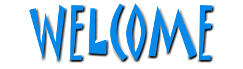

저희
인공지hi to jeremy, brad, zach, afx, tard, shadow, mokey, afx, squarepusher....old is in index.old bye bye....f mr wulf hehe jk...능 연구실을 찾아주신 여러분을 환영합니다. 연구 분야는 인공지능, 영상처리, 패턴인식, 자연어처리, 한국어 정보처리, 퍼지 이론 등입니다
|
1024X786, MSExplorer에 최적화 되었습니다.